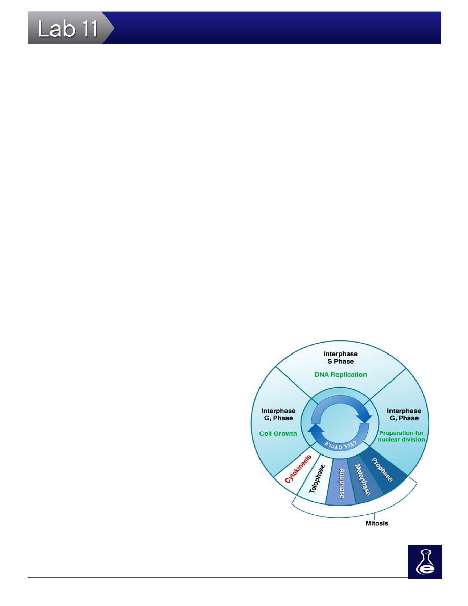

188
Mitosis and Meiosis
than two copies of each chromosome are considered polyploidy. For example, human somatic cells have two copies (2n; or, diploid) of 23 chromosomes, resulting in 46 chromo-somes per cell. On the contrary, somatic kiwifruit cells have six copies (hexaploidy) of 29 chromosomes, re-sulting in 174 chromosomes per cell. Almost all somatic, mammalian cells have two sets of chromosomes. One set originates from the original egg cell and one set originates from the original sperm cell (this results in homologous chromosomes, or two alleles per cell). Cell cycle division generates two new diploid daughter cells from one original parent cell. Each new daughter cell contains two complete sets of chromosomes. The cellular content is identical to the parent cell as long as no mutations or errors occur during cell cycle division.
Cell Cycle Division
Cell cycle division is divided into three phases: interphase, mitosis, and cytokinesis. These phases are fur-
ther broken down into individual stages. These stages are identified as:
1. Interphase:
•
Gap 1 Phase (G
1
): The first stage of interphase; or, the first growth phase.
•
S Phase: DNA synthesis. The second stage of interphase.
•
Gap 2 Phase (G
2
): The third stage of interphase; or, the second growth stage.
2. Mitosis:
•
Prophase
•
Metaphase
•
Anaphase
•
Telophase
3. Cytokinesis:
•
There are no further subdivided stag-
es within cytokinesis.
 The Cell Cycle
The Cell Cycle
A cell normally completes the cycle in 18 - 24 hours. Mi-tosis only occupies one to two hours of that period. Dur-ing interphase, the cell prepares for mitosis and cytoki-nesis by growing larger in size, duplicating its internal organelles (G
1
), replicating its DNA (S) and preparing for
cell division (G
2
). You can easily remember the activity
Figure 2:
Mitosis is only one stage of the cell cycle.